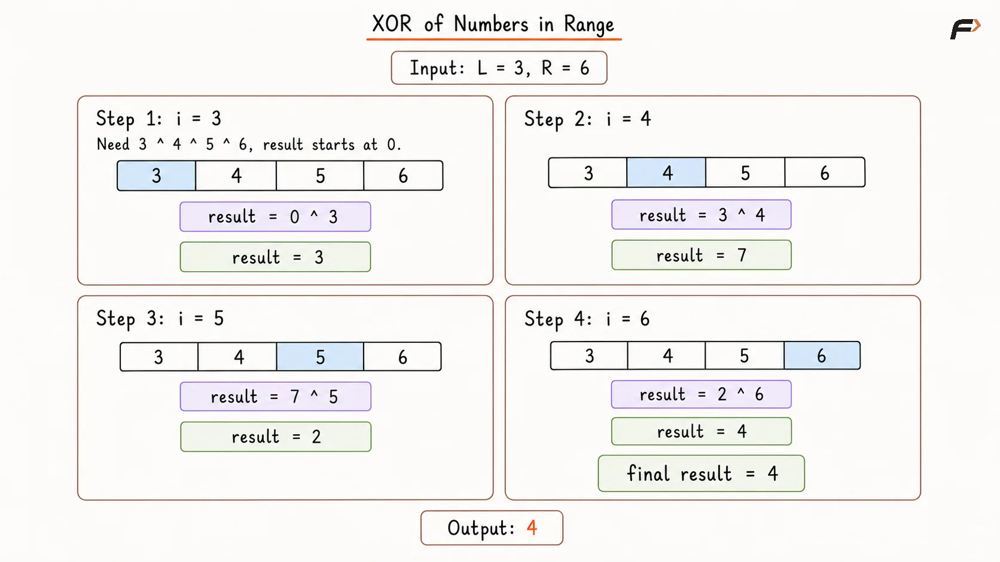
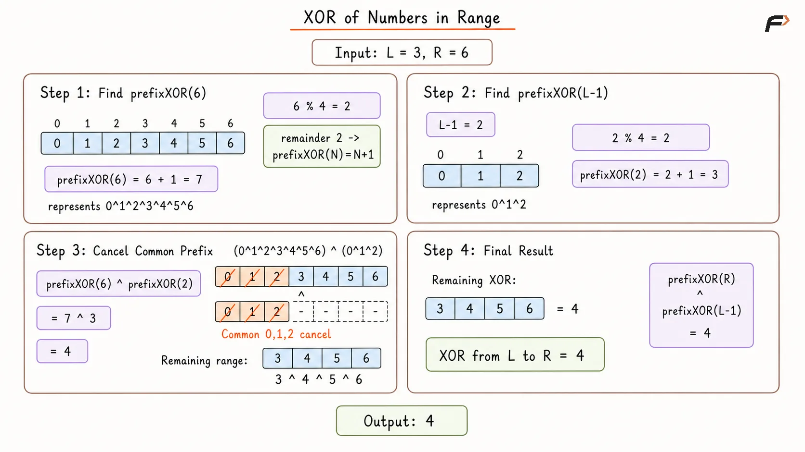

XOR of Numbers in a Range L to R
Given two non-negative integers L and R, return the bitwise XOR of all integers in the inclusive range from L to R.
Example 1
Input: L = 4, R = 8
Output: 8
Explanation: The numbers in the range are 4, 5, 6, 7, and 8. The operation is 4 ^ 5 ^ 6 ^ 7 ^ 8. Calculating this sequentially gives a final result of 8.
Example 2
Input: L = 3, R = 4
Output: 7
Explanation: The only numbers in the range are 3 and 4. The operation 3 ^ 4 evaluates to 7.
Brute Force Approach
The most direct approach is to process every number in the required range and keep XORing it with a running result.
Starting with 0 is useful because x ^ 0 = x. After every value from L to R has been included, the running XOR represents the XOR of the complete range.
Algorithm
If
L > R, return0because the given range is invalid.Initialize
result = 0to store the cumulative XOR of the numbers processed so far.Traverse every integer
ifromLtoR, inclusive.Update
resultasresult ^ iso the current number becomes part of the range XOR.Return
resultafter every number in the range has been processed.
Dry Run

XOR of Numbers in Range Brute Force Appraoch Dry Run .png
Solution
#include <bits/stdc++.h>
using namespace std;
class Solution {
public:
long long findRangeXOR(long long L, long long R) {
if (L > R) {
return 0;
}
long long result = 0;
/*
* Include every value in the range once so result
* gradually becomes the XOR from L through R.
*/
for (long long value = L; value <= R; value++) {
result ^= value;
}
return result;
}
};
int main() {
long long L = 3;
long long R = 6;
Solution solution;
cout << solution.findRangeXOR(L, R) << endl;
return 0;
}Complexity Analysis
Time Complexity: O(R - L + 1), because every integer in the range is processed once.
Space Complexity: O(1), because only a few variables are used.
Optimal Approach
Computing every value in the range is unnecessary because the XOR from 0 to any number N follows a repeating pattern based on N % 4.
Let:
prefixXOR(N) = 0 ^ 1 ^ 2 ^ ... ^ N
Then the XOR of the range L to R can be obtained as:
prefixXOR(R) ^ prefixXOR(L - 1)
This works because every value from 0 to L - 1 appears in both prefix XORs. XORing the two results cancels those common values using x ^ x = 0, leaving only the numbers from L to R.
The prefix XOR follows this four-case pattern:
If
N % 4 == 0,prefixXOR(N) = NIf
N % 4 == 1,prefixXOR(N) = 1If
N % 4 == 2,prefixXOR(N) = N + 1If
N % 4 == 3,prefixXOR(N) = 0
Because this pattern gives a prefix XOR in constant time, the complete range XOR can also be found in constant time.
Algorithm
If
L > R, return0because the range is invalid.Create a helper function
prefixXOR(N)that returns the XOR of all integers from0toN.If
N < 0, return0. This handlesL = 0, where the second prefix becomesprefixXOR(-1).Inside the helper, calculate
N % 4and return the corresponding value from the four-case XOR pattern.Calculate
prefixXOR(R)to represent the XOR of all values from0toR.XOR it with
prefixXOR(L - 1). The common prefix cancels, leaving exactly the XOR fromLtoR.
Dry Run

XOR of Numbers in Range Optimal Appraoch Dry Run .png
Solution
#include <bits/stdc++.h>
using namespace std;
class Solution {
private:
long long prefixXOR(long long n) {
/*
* This represents an empty prefix and also allows
* the same range formula to work when L is 0.
*/
if (n < 0) {
return 0;
}
long long remainder = n % 4;
/*
* XOR from 0 through n follows a four-case pattern,
* so only n % 4 is needed to determine the result.
*/
if (remainder == 0) {
return n;
}
if (remainder == 1) {
return 1;
}
if (remainder == 2) {
return n + 1;
}
return 0;
}
public:
long long findRangeXOR(long long L, long long R) {
if (L > R) {
return 0;
}
/*
* The prefix before L appears in both XOR groups
* and cancels, leaving only values from L through R.
*/
return prefixXOR(R) ^ prefixXOR(L - 1);
}
};
int main() {
long long L = 3;
long long R = 6;
Solution solution;
cout << solution.findRangeXOR(L, R) << endl;
return 0;
}Complexity Analysis
Time Complexity: O(1), because each prefix XOR is found using a fixed number of arithmetic and bitwise operations.
Space Complexity: O(1), because no additional data structure is required.
Interview follow-up Questions
prefixXOR(R) contains every value from 0 to R, while prefixXOR(L - 1) contains the values before L. XORing them makes the common prefix appear twice, so those values cancel and only the range L to R remains.